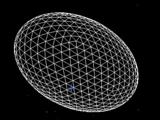
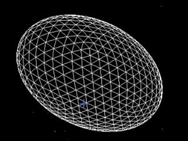

The Geometric library is designed to work with the Ogre3D Game engine, but can be easily adapted to work with any other C++ environment.
The library offers several classes to create dynamicaly geometric 3D-meshes (like cubes, spheres, ellipsoids...).
The API Description is available here
 
